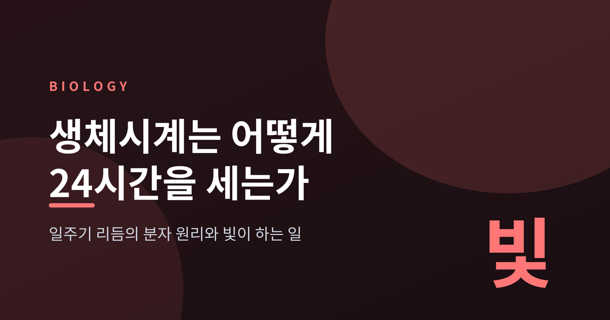
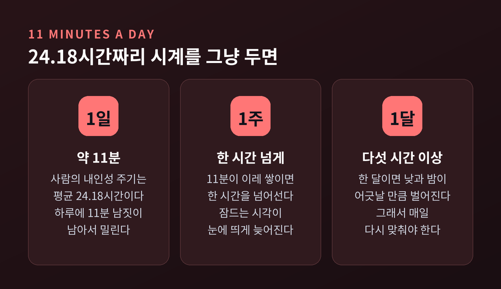
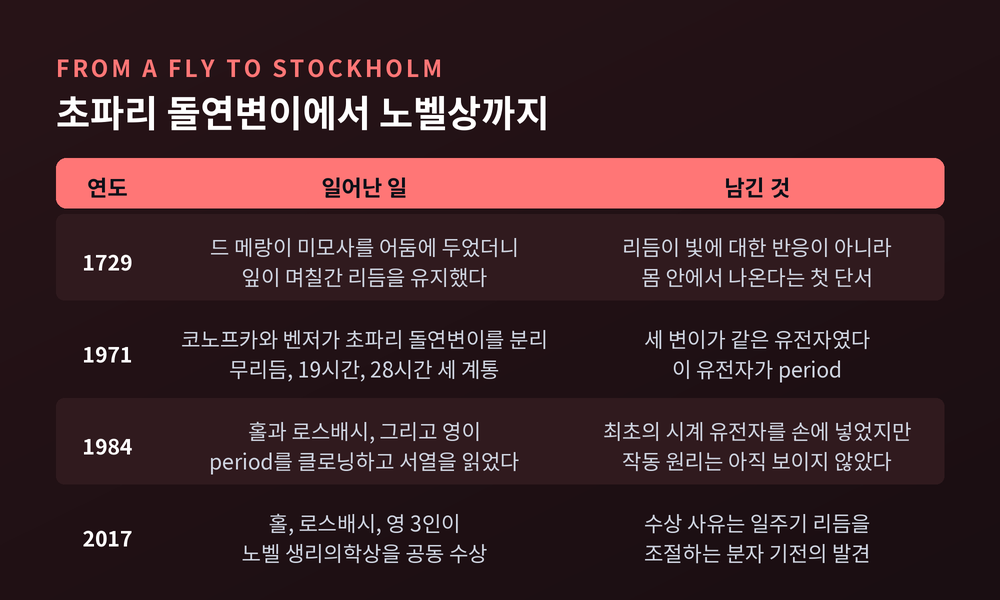
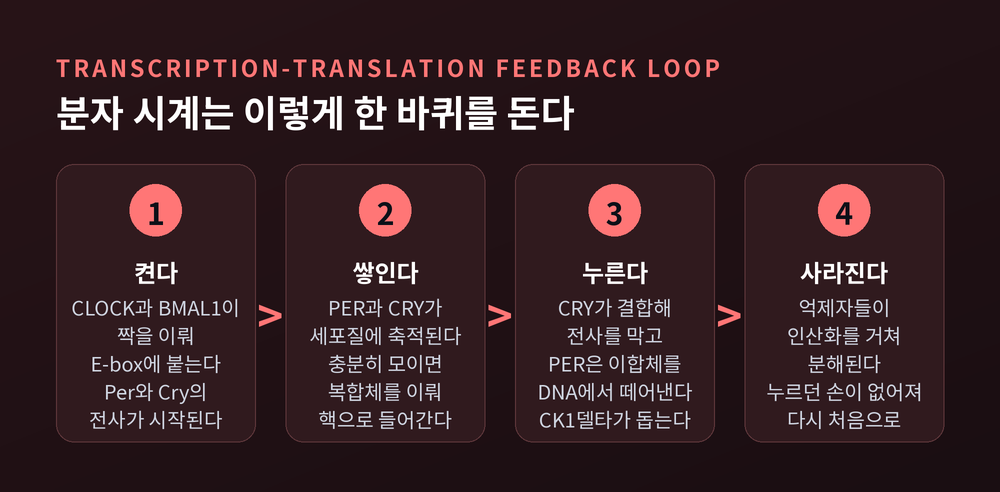
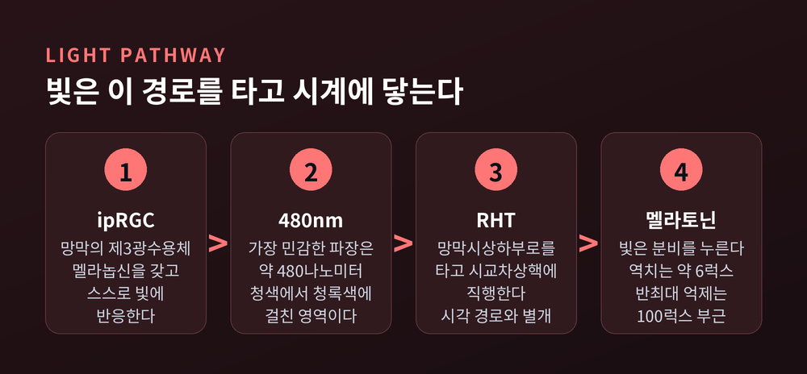
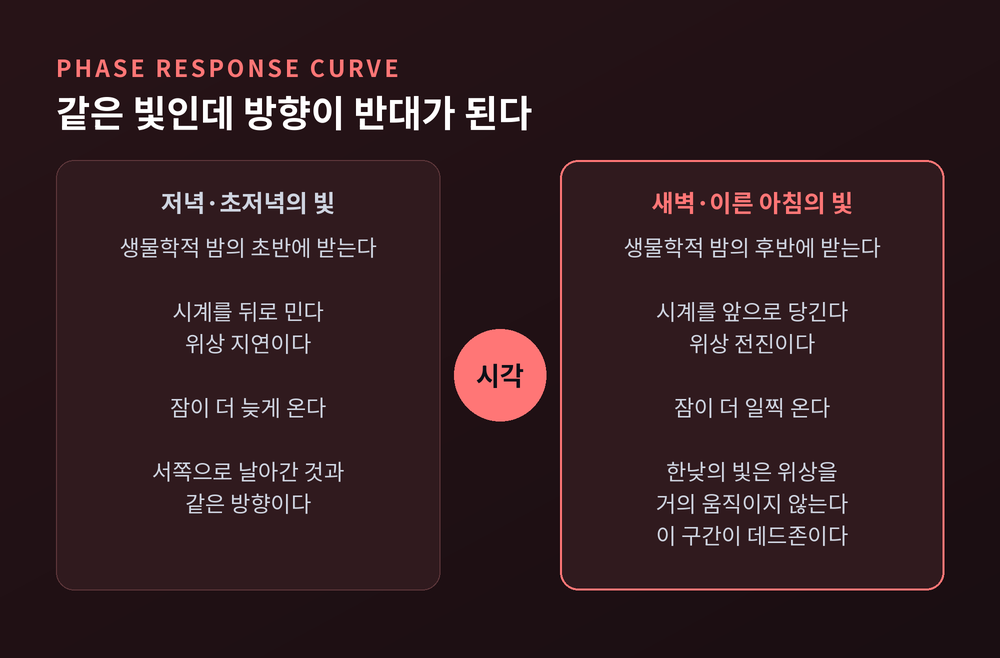
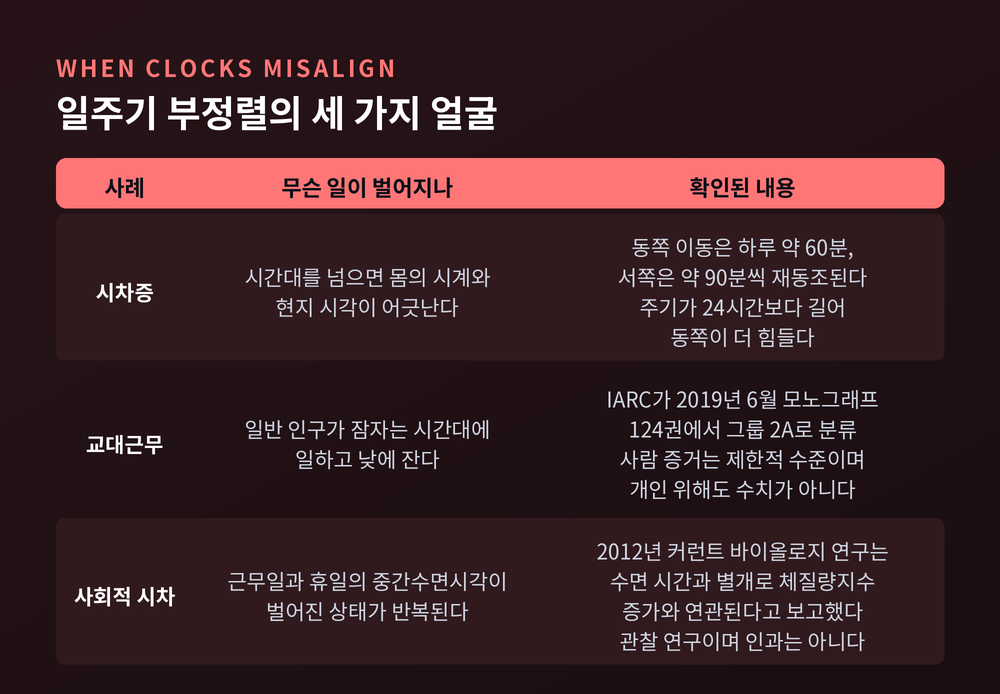

생체시계는 어떻게 24시간을 세는가 — 일주기 리듬과 빛의 분자 원리

이번 글에서는 우리 몸 안의 생체시계가 하루를 세는 방식을 정리해 보겠습니다. 일주기 리듬이 어떤 분자 장치로 돌아가는지, 그리고 빛이 그 시계를 어떻게 만지는지가 중심입니다.
먼저 결론부터 세 줄로 말씀드립니다.
첫째, 사람의 생체시계는 24시간이 아니라 평균 약 24.18시간으로 돕니다. 둘째, 그 한 바퀴는 유전자가 자기 자신의 전사를 억제했다가 분해되는 되먹임 고리에서 나옵니다. 셋째, 매일 어긋나는 11분 남짓을 바로잡아 주는 것이 빛입니다.
우리 몸의 하루는 정확히 24시간이 아닙니다
일주기 리듬은 외부 단서가 전혀 없어도 약 24시간 주기로 이어지는 몸의 변화입니다. circadian이라는 말 자체가 라틴어 circa(대략)와 dies(하루)에서 왔습니다. 이름부터 "대략 하루"라고 못 박아 둔 셈입니다.
빛도 시계도 없는 방에 사람을 두면 리듬은 자유진동 상태로 들어갑니다. 이때 흐르는 시간은 벽시계의 시각이 아니라 몸 고유의 시간입니다.
그 주기가 정확히 얼마인지를 두고 오랫동안 오해가 있었습니다. 예전에는 사람의 내인성 주기가 약 25시간이라고 널리 믿었습니다. 지금은 그 값이 과대추정이었다는 것이 정설입니다. 옛 실험에서는 피험자가 스스로 조명을 켜고 끌 수 있었고, 그 빛이 주기 추정을 왜곡했기 때문입니다.
조명을 엄격히 통제하고 다시 측정한 결과가 1999년 사이언스에 실렸습니다. 강제탈동조라는 방법을 썼습니다. 20시간이나 28시간처럼 24시간과 크게 다른 명암 주기에 참가자를 두어, 빛과 활동의 영향을 시계에서 떼어내는 설계입니다. 멜라토닌과 심부체온, 코르티솔 리듬을 함께 재서 얻은 값은 평균 24.18시간이었습니다. 젊은 사람과 노인 두 집단이 똑같았고, 개인 간 분포도 좁았습니다.
24.18시간이면 하루에 약 11분이 남습니다. 사소해 보입니다만, 일주일이면 한 시간을 넘고 한 달이면 다섯 시간 이상 밀립니다. 그래서 생체시계는 매일 외부 신호에 맞춰 재동조되어야 합니다. 시계를 맞춰 주는 외부 신호를 차이트게버라 부르고, 그중 압도적으로 중요한 것이 빛입니다.

시계는 유전자 안에 있었습니다
생체시계가 몸 안에 있다는 첫 증거는 식물에서 나왔습니다. 1729년 프랑스 천문학자 드 메랑이 미모사를 어둠 속에 두었는데, 잎은 며칠 동안 낮에 열리고 밤에 닫히기를 반복했습니다. 햇빛에 대한 단순 반응이 아니라는 뜻이었습니다.
결정적 전환은 초파리에서 일어났습니다. 1971년 시모어 벤저와 로널드 코노프카가 돌연변이 초파리 세 계통을 분리했습니다. 하나는 리듬이 아예 없었고, 하나는 주기가 19시간으로 짧았으며, 나머지 하나는 28시간으로 길었습니다. 세 돌연변이는 모두 같은 유전자의 변이였습니다. 이 유전자가 period입니다.
그러나 유전자를 손에 넣는 데에는 시간이 더 걸렸습니다. period가 실제로 클로닝되고 서열이 밝혀진 것은 1984년입니다. 브랜다이스 대학교에서 함께 일하던 제프리 홀과 마이클 로스배시, 그리고 록펠러 대학교의 마이클 영이 각각 해냈습니다.
문제는 그다음이었습니다. 서열을 읽어도 시계가 어떻게 돌아가는지는 보이지 않았습니다. 당시에는 PER 단백질이 막을 가로질러 농도 기울기를 만드는 펌프라는 가설, 세포끼리 붙여 주는 프로테오글리칸이라는 가설까지 나와 있었습니다.
답은 1988년부터 1998년 사이에 조각조각 맞춰졌습니다. PER 단백질의 양이 24시간 주기로 오르내린다는 것, mRNA의 정점이 초저녁에 오고 단백질의 정점은 그보다 몇 시간 뒤에 온다는 것, PER이 자기 유전자의 발현을 스스로 눌러 버린다는 것이 차례로 확인되었습니다. 여기에 영 연구실이 찾아낸 timeless와 doubletime, 그리고 clock과 cycle이 더해지며 고리가 닫혔습니다.
2017년 노벨 생리의학상은 제프리 C. 홀, 마이클 로스배시, 마이클 W. 영 세 사람에게 돌아갔습니다. 수상 사유는 "일주기 리듬을 조절하는 분자 기전의 발견"이었습니다.

한 바퀴에 24시간이 걸리는 이유
핵심 장치의 이름은 전사·번역 음성 되먹임 고리입니다. 영어 머리글자를 따 TTFL이라고 씁니다. 어떤 유전자가 만들어 낸 단백질이 자기 자신의 전사를 억제하는 구조입니다.
사람을 포함한 포유류에서는 네 단계로 돌아갑니다.
먼저 CLOCK과 BMAL1 두 단백질이 짝을 이룹니다. 이 짝이 표적 유전자 앞자락의 E-box라는 서열에 붙어 전사를 켭니다. 표적에는 자기를 억제할 Per와 Cry가 들어 있습니다.
다음으로 PER과 CRY 단백질이 세포질에 쌓입니다. 충분히 모이면 복합체를 이루어 핵으로 들어갑니다.
세 번째로 억제가 시작됩니다. CRY는 DNA에 붙어 있는 CLOCK-BMAL1에 결합해 전사를 막고, PER은 CRY의 도움을 받아 CLOCK-BMAL1을 DNA에서 아예 떼어냅니다. 이때 PER과 CRY가 CK1δ라는 인산화효소를 핵 안으로 데려와 CLOCK을 인산화하는 과정이 관여합니다.
마지막으로 억제자들이 인산화를 거쳐 분해됩니다. 누르던 손이 사라지면 CLOCK-BMAL1이 다시 일어서고, 한 바퀴가 새로 시작됩니다. PER과 CRY는 새벽 무렵 가장 높고, 오후에 가장 낮습니다.
여기서 한 가지 의문이 남습니다. 전사와 번역 자체는 대체로 빠른 반응입니다. 그대로 두면 이 고리는 몇 시간이면 한 바퀴를 돌 것입니다. 그런데 왜 24시간이 걸릴까요.
노벨상 공식 자료가 짚는 답은 이렇습니다. 24시간 진동을 만들려면 고리에 상당한 지연이 인위적으로 부과되어야 한다는 것입니다. 그 지연을 만드는 장치가 단백질 인산화, 분해 속도의 조절, 복합체 조립, 핵으로의 이동 같은 번역 후 과정들입니다. 마이클 영이 찾아낸 doubletime 인산화효소가 PER을 인산화해 분해를 앞당기며 지연을 만드는 것이 대표적인 예입니다.
정리하자면 이렇습니다. 24시간이라는 숫자는 어느 유전자에도 적혀 있지 않습니다. 여러 화학 반응에 걸리는 시간이 차곡차곡 쌓여 나온 값입니다.
다만 TTFL이 전부는 아닙니다. 시아노박테리아는 전사와 무관하게 단백질 인산화만으로 리듬을 만들고, 핵이 없는 사람의 적혈구에서도 하루 주기의 산화 리듬이 관찰되었습니다. 이런 예외의 생리적 의미는 아직 밝혀지지 않았습니다.

뇌 속의 표준시계와 온몸의 시계들
중추시계는 시상하부의 시교차상핵에 있습니다. 줄여서 SCN이라 부릅니다. 시신경교차 바로 위, 제3뇌실 옆에 좌우 한 쌍으로 놓여 있고 약 2만 개의 뉴런으로 이루어져 있습니다.
흥미로운 점은 이 2만 개가 하나의 부품이 아니라는 것입니다. 뉴런 하나하나가 저마다 다른 주기와 위상을 가진 독립된 진동자입니다. 이들이 서로 신호를 주고받으며 동기화될 때 비로소 SCN 전체가 정밀해집니다. 가장 중요한 결합 신호로는 VIP라는 신경펩타이드가 알려져 있습니다.
말초 장기에도 시계가 있습니다. 간, 췌장, 근육, 지방조직의 세포들은 몸에서 떼어내 배양접시에 올려놓아도 스스로 일주기 진동을 이어 갑니다. 그래서 노벨상 자료는 우리 몸의 시계 체계를 "시계 하나가 아니라 시계 가게"라고 표현합니다.
SCN은 체액성 인자와 자율신경을 통해 이 시계들을 조율합니다. 다만 말초시계는 SCN 말고도 식사 시각, 신체활동, 온도 같은 단서에 반응합니다. 그리고 그 결과인 혈당이나 호르몬 리듬이 다시 SCN 쪽으로 되먹임됩니다. 일방적인 지휘가 아니라 그물망에 가깝습니다.
시계의 영향 범위는 생각보다 넓습니다. 2018년 사이언스에 실린 연구는 주행성 영장류인 개코원숭이의 64개 조직을 두 시간 간격으로 스물네 시간 동안 채취해 전사체를 분석했습니다. 그 결과 단백질 코딩 유전자의 약 82퍼센트가 최소 한 개 이상의 조직에서 하루 주기 리듬을 보였습니다. 리듬은 조직마다 달랐습니다. 같은 유전자라도 간에서 뛰는 시각과 뇌에서 뛰는 시각이 다르다는 뜻입니다.
빛은 어떻게 시계를 만지는가
빛이 시계를 맞춘다면, 그 빛은 어느 세포가 받을까요. 답은 간상세포도 원추세포도 아닙니다.
망막에는 제3의 광수용체가 있습니다. 내인성 광감수성 망막신경절세포, 줄여서 ipRGC입니다. 이 세포는 멜라놉신이라는 광색소를 스스로 갖고 있어 다른 신경세포의 도움 없이 빛에 직접 반응합니다. 크기가 크고 수상돌기를 성기게 뻗어 망막 전체를 덮는 성긴 그물을 이룹니다.
ipRGC가 가장 민감하게 반응하는 파장은 약 480나노미터입니다. 청색에서 청록색에 걸친 영역이고, 간상세포나 원추세포가 가장 잘 반응하는 파장과는 뚜렷이 다릅니다. 밤늦은 화면 빛이 자주 거론되는 이유가 여기에 있습니다.
이 세포들이 모은 빛 정보는 망막시상하부로라는 전용 신경다발을 타고 SCN으로 곧장 갑니다. 사물을 보는 경로와는 별개의 길입니다.
빛은 멜라토닌 분비도 누릅니다. 사람의 멜라토닌 억제 역치는 약 6럭스로 보고되어 있고, 백색광에 대한 반최대 억제는 100럭스 부근에서 나타납니다. 권장 사무실 조도가 350에서 500럭스 사이인 것을 생각하면 낮은 값입니다. 실제로 500럭스 미만의 실내 조명만으로도 뚜렷한 멜라토닌 억제와 위상 이동이 일어납니다. 취침 전 실내 조명 노출이 멜라토닌 분비 시작을 늦추고 분비 지속시간을 줄인다는 연구가 있습니다.
그래서 연구자들은 멜라토닌이 언제 나오기 시작하는지를 시계 바늘의 눈금으로 씁니다. 어두운 조건에서 멜라토닌 분비가 시작되는 시점을 DLMO라고 부릅니다. 사람의 일주기 위상을 재는 가장 정확한 단일 지표로 평가되며, 보통 잠들기 두세 시간 전에 나타납니다.

같은 빛이 앞당기기도 하고 늦추기도 합니다
빛의 효과에서 가장 오해가 잦은 부분입니다. 빛은 무조건 시계를 앞당기지 않습니다. 언제 받았느냐에 따라 방향이 뒤바뀝니다.
이 관계를 그린 것이 위상반응곡선입니다. 가로축에 빛을 받은 시각을, 세로축에 그 빛이 만든 위상 이동량을 놓습니다.
저녁부터 생물학적 밤의 초반까지 받은 빛은 시계를 뒤로 밉니다. 위상 지연입니다. 잠이 더 늦게 옵니다.
생물학적 밤의 후반부터 이른 아침까지 받은 빛은 시계를 앞으로 당깁니다. 위상 전진입니다. 잠이 더 일찍 옵니다.
한낮에 받은 빛은 위상을 거의 움직이지 않습니다. 이 구간을 데드존이라 부릅니다. 다만 아무 일도 하지 않는 것은 아닙니다. 낮의 빛은 리듬의 진폭을 키우는 쪽으로 작용하는 경향이 있습니다. 위상 이동의 크기는 빛의 세기와 지속시간, 파장 구성, 그리고 노출 시각에 따라 달라집니다.

시차증, 교대근무, 그리고 사회적 시차
시차증은 이 원리가 가장 알기 쉽게 드러나는 사례입니다. 재동조 속도는 문헌에 따라 조금씩 다릅니다만, 대체로 위상을 앞당겨야 하는 동쪽 이동은 하루 약 60분, 뒤로 미는 서쪽 이동은 하루 약 90분 정도로 보고됩니다. 시간대 하나당 동쪽은 약 하루, 서쪽은 약 0.75일이라는 표현도 쓰입니다.
동쪽이 더 힘든 이유는 앞서 나온 24.18시간과 이어집니다. 내인성 주기가 24시간보다 길면 시계는 뒤로 밀리는 쪽을 더 쉽게 받아들입니다. 서쪽 이동이 바로 그 방향입니다.
교대근무는 더 무거운 문제입니다. 세계보건기구 산하 국제암연구소인 IARC는 2019년 6월, 모노그래프 124권에서 야간 교대근무를 그룹 2A, 곧 인체 발암성 추정 물질로 분류했습니다. 사람에서의 제한적 증거와 실험동물에서의 충분한 증거, 그리고 강력한 기전적 증거를 근거로 삼았습니다. IARC가 정의한 야간 교대근무에는 시간대를 넘는 항공 이동도 포함됩니다.
다만 해석에는 신중해야 합니다. 그룹 2A는 위험 요인의 성격을 가리키는 분류이지, 개인이 암에 걸릴 확률이 얼마나 오르는지를 말해 주는 수치가 아닙니다. 사람에서의 증거 수준도 제한적입니다.
한편 시계와 사회 사이의 어긋남은 야간 근무자만의 일이 아닙니다. 크로노타입은 아침형과 저녁형 사이의 연속적인 성향을 말합니다. 뮌헨 크로노타입 설문에서는 잠든 시각에 수면 시간의 절반을 더한 중간수면시각으로 이 성향을 계산합니다.
여기서 사회적 시차라는 개념이 나옵니다. 근무일의 중간수면시각과 휴일의 중간수면시각이 얼마나 벌어져 있는지를 잰 값입니다. 주중에는 알람이 정한 시각에 일어나고 주말에는 몸이 원하는 시각에 일어나는 사람은, 매주 짧은 비행기 여행을 반복하는 셈입니다. 2012년 커런트 바이올로지 연구는 수면 시간과 별개로 사회적 시차가 체질량지수 증가와 유의하게 연관된다고 보고했습니다. 다만 이는 연관성을 본 관찰 연구이며 인과로 단정할 수는 없습니다.

시간을 아는 약
시계가 몸 곳곳을 움직인다면, 약도 시각을 알아야 합니다. 이 분야를 시간약리학 또는 시간요법이라 부릅니다.
근거가 되는 관찰이 있습니다. 500종에 가까운 약물의 내약성이 투여 시각에 따라 최대 다섯 배까지 달라진다는 보고입니다. 여기에는 약이 몸에서 어떻게 작용하는가뿐 아니라, 어떻게 흡수되고 분해되는가도 함께 얽혀 있습니다. 이미 무작위 임상시험에서 일주기를 고려한 치료가 환자 결과를 개선한 사례가 나와 있습니다. 암과 염증성 질환에서 특히 그렇습니다.
아직 완성된 분야는 아닙니다. 노벨상 자료도 시계의 주기와 위상, 진폭을 조절해 건강을 개선하려는 접근이 "개발 중"이라고 적고 있습니다.
정리하면 이렇습니다. 우리 몸에는 24시간을 세는 장치가 있지만, 그 장치는 조금 느리게 갑니다. 하루 11분씩 어긋나는 시계를 매일 아침 빛이 다시 맞춰 줍니다.
"생체시계는 정확해서가 아니라, 매일 다시 맞춰지기 때문에 정확합니다."
덧붙일 말이 하나 있습니다. 이 글은 생물학적 원리를 정리한 것이지 의학적 조언이 아닙니다. 잠들기 어렵거나 낮에 견디기 힘든 졸음이 이어진다면 스스로 판단하지 마시기 바랍니다. 국제수면장애분류는 지연성 수면-각성 위상 장애와 교대근무 장애를 별도의 진단으로 두고 있고, 불면증이나 수면무호흡, 기면증과 감별해야 합니다. 수면 일기와 활동기록검사 같은 도구도 필요합니다. 이런 판단은 전문의의 몫입니다.
내일 아침 창가에서 몇 분을 보내는 일이 그렇게 대단한 일이냐고 물으신다면, 하루 11분을 되찾는 일이라고 답하겠습니다.